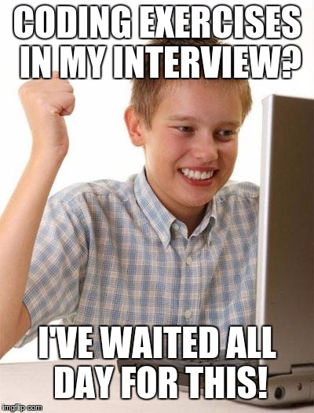

Interactive UI - Vote
Implement a button or buttons for up and down voting the meme shown below. Change the button(s) state in some fashion (its text, color, icon, etc.) to indicate the user action.

Memes are an optional part of the Minted employee experience.
...